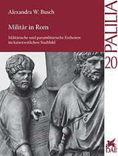

Al catalogo dei resti architettonici
Al catalogo dei monumenti funebri

Nel volume numero 20 di Palilia si tratta l'esercito nella città di Roma in tutti i suoi aspetti, specialmente le molte sfaccettature dei suoi aspetti culturali, gli effetti sulla popolazione urbana e il suo valore per la vita civile nella capitale. Nel periodo repubblicano Roma era considerata una zona "demilitarizzata". Sotto Augusto i soldati si installarono nella capitale dell'impero per la prima volta, portando dalla repubblica al principato ad un deciso cambiamento. Tra i 10.000 e 40.000 soldati vissero e lavorarono nella Roma imperiale, costituendo un importante fattore della cultura civica della città.
Questo libro è la prima valutazione globale delle fonti scritte, archeologiche e iconografiche dell'esercito a Roma, oltre che della vita e della funzione del soldato romano nella capitale.
Le basi del materiale archeologico per lo studio, come le vestigia dove stazionavano le truppe o i monumenti funebri dei soldati e dei veterani, sono state registrate e strutturate usando il database Arachne. Qui, in aggiunta al testo stampato, tutti i materiali archeologici possono essere salvati, cercati e riordinati sulla base dei criteri dell'utente. Possono essere infine esportati, usando l'indice del catalogo dei contenuti e la "metaricerca" o la "ricerca avanzata". Essendo Arachne una piattaforma dinamica, offre anche all'autore l'opportunità di aggiungere informazioni a reperti conosciuti, ma anche a reperti che vengono scoperti dopo la pubblicazione del libro. L'autrice è felice di accogliere ogni informazione, aggiunta o correzione al testo.